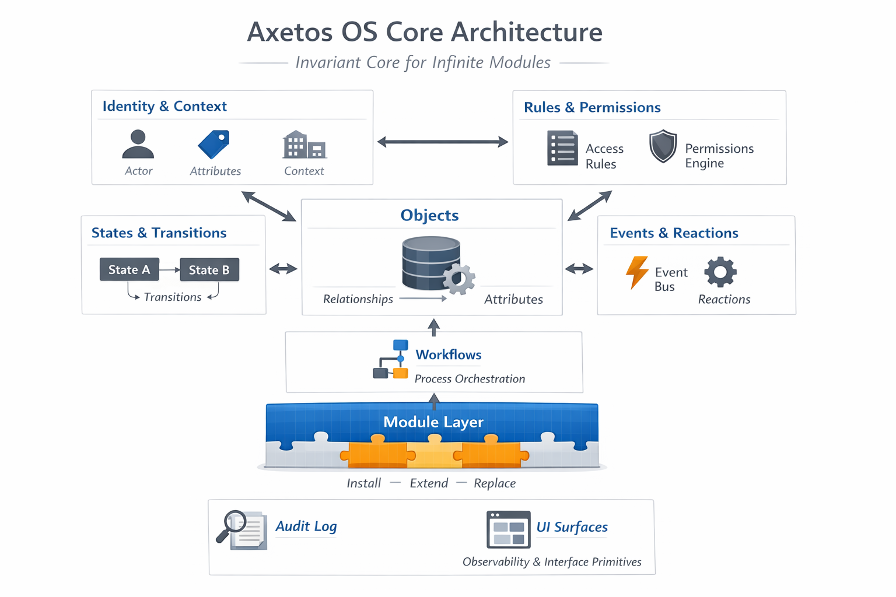

Our Vision
Axetos OS is designed to last decades — even centuries. At its heart is a frozen core that never changes, ensuring stability and reliability, no matter how many modules or extensions are added. Modules define capabilities, and the platform layer allows organizations to configure and connect those capabilities without touching the core.
Every module, whether built by our team or third-party developers, operates under the authority of the core. Users can configure, extend, and compose behavior — but cannot create capabilities that don’t already exist.
Architecture Overview
The image above illustrates the three main layers of Axetos:
- Core: Immutable foundation that enforces rules, contracts, and the system's invariants.
- Platform / Middle Layer: Handles configuration, rules, orchestration, and composition for all modules without altering the core. Think of it as the universal adapter between core and modules.
- Modules: Specialized components that provide capabilities such as client management, inventory, payments, or any other feature. Modules are independently developed but must comply with the core’s contracts.
How It Works
Modules can be adapted to the organization’s workflows through the middle layer. For example, a Client Module can be configured to show only the fields the company needs, reorder data, or add buttons for actions such as payments — but only if the corresponding module (like Payment Module) is installed. No module can alter the core or invent new capabilities.
In short:
- The core is frozen and governs the system.
- The platform allows configuration and orchestration.
- Modules provide capabilities and obey contracts.
- Users can compose behavior, but cannot break or bypass the core.
Why Axetos Is Limitless
Axetos allows software to evolve indefinitely. Modules can be added, replaced, or upgraded over time, and organizations can adapt their workflows without ever modifying the core. The platform ensures safe, consistent composition of modules while maintaining long-term stability. It is built to scale from a single module to millions, without ever compromising the system’s integrity.
In essence, Axetos is like a railway system: the track (core) never changes, the wheel assemblies and couplings (platform) are standardized, and specialized cars (modules) can be attached, removed, or replaced at will.
Contact
For inquiries or early access, contact: patricand@gmail.com